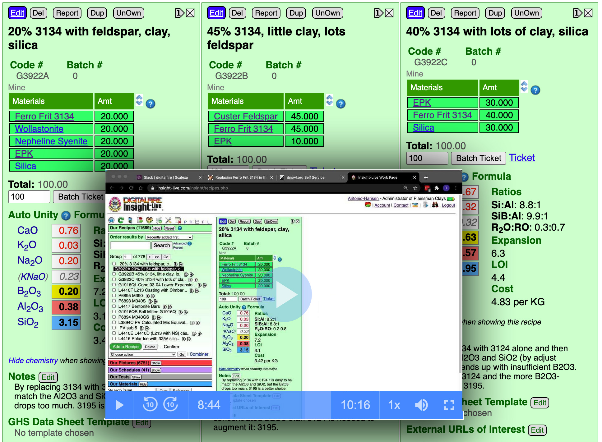
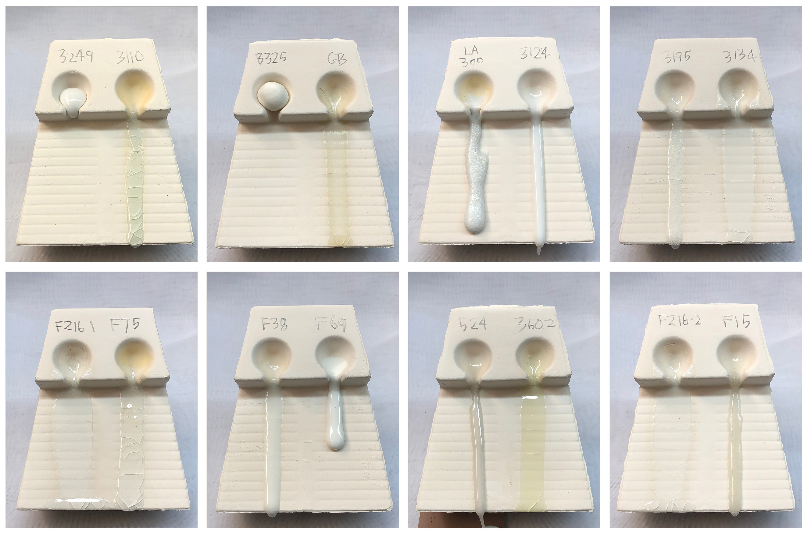
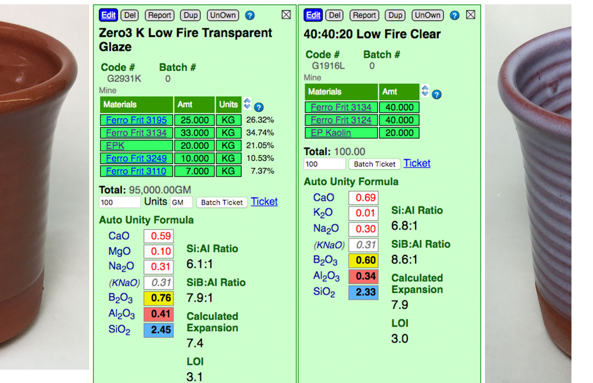
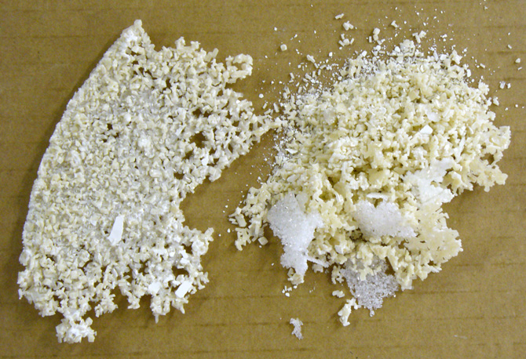
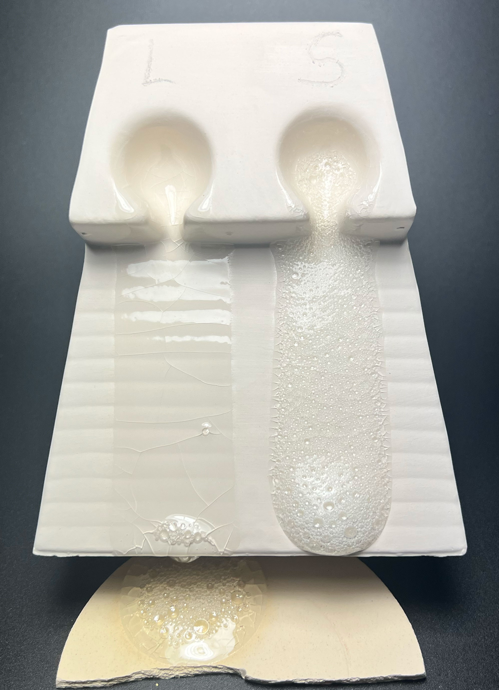
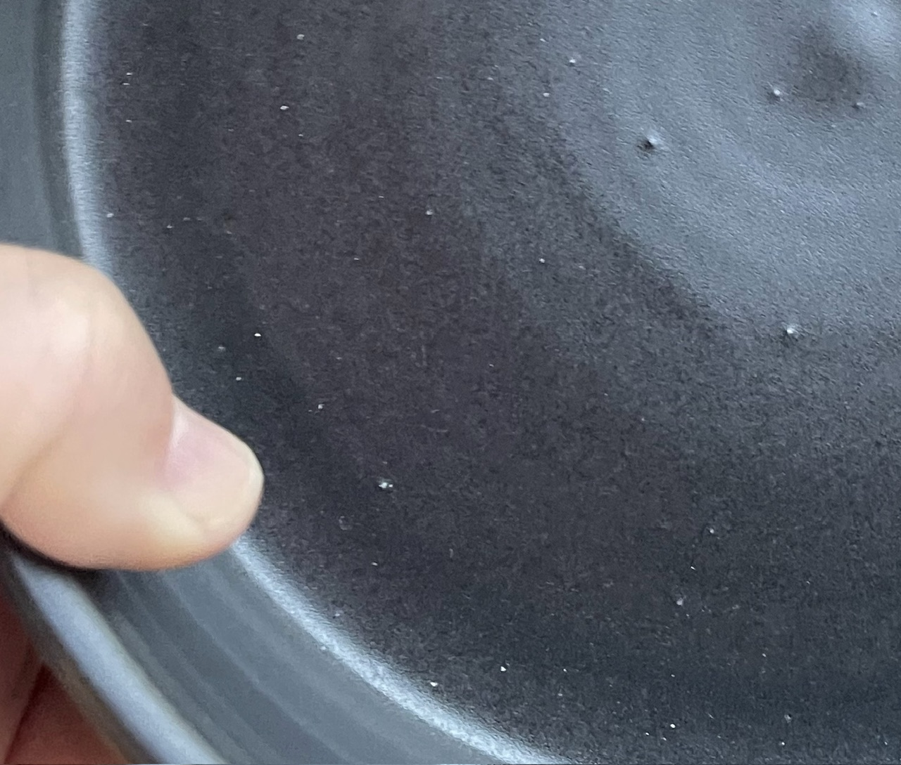
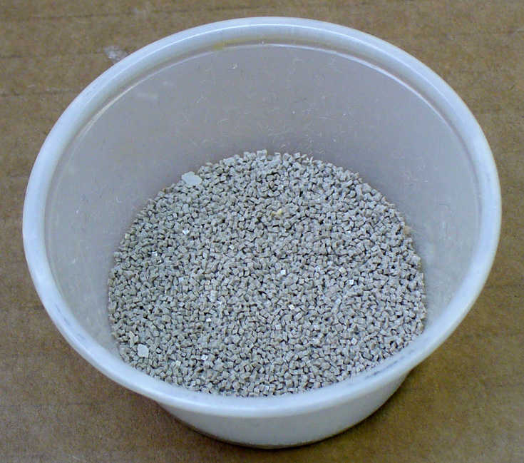
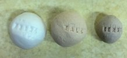
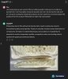

Frit
Frits are used in ceramic glazes for a wide range of reasons. They are man-made glass powders of controlled chemistry with many advantages over raw materials.
Key phrases linking here: fritted, frits, frit - Learn more
Details
A ceramic glass that has been premixed from raw powdered minerals and then melted, cooled by quenching in water, and ground into a fine powder (search YouTube for interesting videos). Huge quantities and varieties of frits are manufactured for the ceramic industry every year (especially for tile) by dozens of different companies. Smelting is done to temperatures far higher than what can be achieved in kilns that we are used to in traditional ceramics. For example, frits with no boron might be heated to 1400C+ and held, that is enough to produce a glass that mixes and runs like water.
While frits can be a bit of a mystery to smaller operations and potters who often use raw glazes, learning when to take advantage of frits can potentially solve many problems and improve products. Of course, frits are more expensive than raw materials, but the advantages often outweigh the costs (e.g. they reduce costs in other stages of production). Many of the reasons for employing frits over raw materials parallel those for using stains over raw metal oxides. In general, higher percentages of frit enable better fired quality, lower melting temperature, fewer defects, better clarity, smoother surface, brighter colors, faster firing, and lower thermal expansion. While glazes having 85% frit (plus 15% clay for suspension and hardening) might seem much too expensive, when the extra cost is balanced against the other benefits it can easily to worth it for smaller operations.
Frits are often described in accordance with the purpose of the original formulation (e.g. "for producing clear glazes at 1050-1100C"). However, to users frits are just sources of oxides, so although one might have been intended for a specific purpose it can be used to source its oxides to any type of glaze. Frits may also be objectively described according to the relative amounts of oxides present. For example, a frit might be designated a "low boron high sodium leadless zinc flux". Typically the term "high" means greater than 10% (SiO2 is not usually mentioned as high since it is high in almost all frits), "medium" 2-10% and "low" less than 2%. So the above frit would be >10% Na2O, <2% B2O3 and unstated zinc (which would likely be medium).
We see frits as sources of oxides and thus when substituting, the focus is to maintain the chemistry of the glaze but to change the recipe in such a way that a different frit and mix of materials with it produces the same chemistry. When one learns to view frits as warehouses of oxides, almost any desired chemistry can be achieved by mixing them using glaze chemistry. While frit data sheets will often recommend additions of a certain product to raise or lower melting temperature, raise or lower thermal expansion, increase durability, adjust mattness, etc., it is usually better to rationalize these things in terms of the chemistry. Technical references (and many pages on this site) document what oxides need to be added, removed, increased, or decreased and how they interact to adjust temperature, expansion, gloss, resistance to leaching, hardness, color response, etc. By using glaze chemistry software the oxide formula of a glaze can often be moved in the needed direction by employing frits in stock (rather than having to add more materials to inventory). Amazingly very few technicians in the pottery and ceramic industry have any idea that this can be done.
Here are some of the many reasons to use frits in glazes, enamels, etc.
-To render soluble materials insoluble
Often very useful oxides (i.e. boron) are contained in high proportions in raw materials that are either slightly or very soluble. These normally cannot be used in glazes because they have adverse effects on the slurry's fluidity, viscosity, thixotropy, or make it difficult to achieve or maintain the desired specific gravity. In addition, soluble compounds are absorbed into porous bodies during glazing and this compromises the body's resistance to bloating and warping and the glaze's homogeneous structure. Fritted mixes containing these materials render them insoluble and inert. This being said, some frit formulations require crowding the solubility line, they are thus slightly soluble and over time can precipitate crystals into glaze slurries. In addition, if frits are not processed correctly they can also be soluble.
-To improve process safety of toxic metals
Some materials contain undesirable and unsafe compounds. The fritting process gases these off. Many other materials are unsafe in the workplace and fritting theoretically decreases their toxicity for production workers by locking them into a stable glass chemistry (lead and barium are examples). However, frits are flash-cooled, which compromises their theoretical resistance to leaching. This can be demonstrated by leach testing a frit and a glaze made using a high percentage of it - the former may fail while the latter passes. Why? Because glazes are cooled far slower, the effect is an annealing of the glass producing much better hardness and durability. Of course, a glaze can also be unstable simply because of unstable chemistry, this can be achieved whether sourcing oxides from frits or raw materials.
-Consistency and repeatability in production
Raw materials vary in physical properties and chemistry much more than frits. This also makes it possible to scale the production of glaze effects that depend on a critical balance of chemistry that would be impossible to maintain with raw materials. This being said, frits are made by workers under pressure to maximize production and cut costs, companies using lots of frit do experience consistency issues from suppliers on all continents.
-To supply B2O3
Boron is the principal flux in most ceramic processes, but the raw forms are either soluble, inconsistent or have high LOI.
-To reduce melting temperature and improve melt predictability
Since frits have been premelted to form a glass, remelting them requires less energy and lower temperatures (for example, there are no quartz grains to take into solution, they have already formed silicates). Frits soften over a range of temperatures (in contrast to crystalline raw materials that melt suddenly) and lend themselves very well to production situations where repeatability and ease-of-use are necessary. An MgO frit, for example, enables its use at far lower temperatures than sourcing it from talc or dolomite.
-More predictable
Frits are also very predictable when using glaze chemistry, it is more absolute and less relative. Mineral sources of oxides impose their own melting patterns and when one is substituted for another to supply an oxide a different system with its own relative chemistry is entered. But when changing from one frit to another to supply an oxide or set of oxides, the melting properties stay within the same system and are predictable.
-To avoid volatilization of gases during decomposition
Most raw ceramic materials have an LOI (contain sulphur or carbon compounds as well as H2O, some up to 50% by weight!). These vaporize at various temperatures as materials decompose and are driven off as gases during firing. This volatilization activity has a detrimental effect on the glaze surface and matrix. The fritting process drives off these compounds and glazes are thus much more defect-free. Barium and lithium frits, for example, produce much better glazes than those made with lithium and barium carbonate.
-To achieve homogeneity in the melt
Other than dissolution and very localized migration, melting raw glazes do not mix well to create an evenly dispersed oxide structure. The fritting process employs mechanical mixing to ensure a more homogeneous glass that will exhibit the intended properties. Of course, the completeness of the mixing will depend on the product quality delivered by the manufacturer.
-To achieve oxide blends that are difficult or impossible with raw materials.
A frit can supply a specific chemistry that a raw material cannot (for example as a source of KNaO without much Al2O3 to enable getting more clay into a glaze while maintaining its chemistry, or to make a crystalline glaze which requires low Al2O3 and high KNaO). One interesting group is the 'specific oxide' borosilicates, they contain borosilicate and one other oxide (i.e. calcium, barium, sodium, strontium, lithium). Frits GF-125, 129, 143, 154, 156 are examples.
-Improve the quality of decoration
Over and underglaze colors work better with frits than raw materials because the former are cleaner, less reactive, melt evenly, and have a more closely controlled chemistry. This means colors are brighter by virtue of compatible chemistry, by better glaze clarity. Edges of colors also tend to bleed less and color quality is homogeneous rather than variegated (although variegating materials can be introduced to introduce this quality if desired).
-Special effects
Frits make it possible to create chemistries that result in phase separations during cooling producing matteness, opacity or specific mechanical properties that the homogenous glass does not have. These effects are practically impossible with raw materials whose particles do not melt enough, produce excessive gases of decomposition and do not combine to get the desired chemistry.
-Fast-fire technology
Industry now measures firing time in minutes instead of hours. Frits can be formulated to melt quickly and evenly after body gases have been expelled, thus greatly reducing glaze imperfections. Fast firing also makes it economically feasible to go to higher temperatures. Defect-free high strontium, barium and calcium glazes could never be made with raw materials for fast fire. In addition, fast fire makes it possible to break some traditional rules. For example, zinc-based glazes that are normally hostile to many stain types simply do not have time to subdue or alter the color.
-Opaque glazes
When zircon is added to a frit during the smelting process it is a more effective opacifier. Clear and opaque frits can be blended to give excellent control over opacity.
-Wide firing range
Many stains soften over a wide softening range as opposed to having a sudden melting temperature.
See the Frit master material record for more information (link provided below).
A Special Need for Potters and Small Industry
Raw material sources of BaO, Li2O, ZnO, SnO and MgO are very troublesome (e.g. poisonous, soluble, produce unwanted crystallization, do not melt readily, have high LOIs causing glaze bubbles, defects, etc). Current frits that source these are very expensive, not available in small quantities and have either undocumented or inappropriate chemistries for use in typical glazes. These oxides have tremendous potential for special effects and properties but are not commonly used because of this issue. If a company was able to produce stable stoichiometric chemistries to source these oxides in the maximum possible percentages (in a traditional Al2O3, B2O3, SiO2, CaO, Na2O, K2O base) there are 200,000 potters and small ceramic manufacturers in North America alone that would be interested. Well-documented powders could be marketed in a well-crafted online store for premium prices (because they would be so valuable). Could your company manufacture these? We could assist in educating users why these frits are needed and showing them how to incorporate them into their recipes (to enable removing the raw material that sources one of the five oxides mentioned above). Our Insight-live site could be the centerpiece of this effort, providing the tools to make calculations and do the testing. A side benefit would the ability to lead users to move the firing temperatures of their bodies and glazes downward to save energy (hundreds of degrees could be saved with as good or better strength).
Frit Quality
To be as close as possible to theoretical performance and claimed chemistry frit raw materials must be consistent, batches must be smelted thoroughly and blended well before bagging. Frit formulations also have an impact on their producibility as a consistent product. But, realistically, frit-making is a demanding endeavor. Multiple ceramic product manufacturers have confided in us that claimed frit chemistry of suppliers often does not match the real-world material they get. They remark: "You get what you pay for!". The problem is serious enough that many run chemical analyses on each shipment (we are surprised at the degree of variation). However, homogeneity within batches is another issue being encountered - that means the powder of an entire batch (e.g. 40 bags) would need to be mixed and assayed for a reliable overall chemistry. Frits can also have solubility issues, these affect their use in bodies (both plastic and slurry) and glazes (especially with rheology). Some users complain that enquiries with suppliers don’t go very far. However, there is a positive development from some manufacturers: Better batch labelling - every bag is uniquely stamped so that it can be traced completely.
Related Information
Frits melt so much better than raw materials

This picture has its own page with more detail, click here to see it.
Feldspar and talc are both flux sources (glaze melters), they are common in all types of stoneware glazes. But their fluxing oxides, Na2O and MgO, are locked in crystal structures that neither melt early or supply other oxides with which they like to interact. The pure feldspar is only beginning to soften at cone 6. Yet the soda frit is already very active at cone 06! As high as cone 6, talc (the best source of MgO) shows no signs of melting activity at all. But a high-MgO frit is melting beautifully at cone 06! The frits progressively soften, starting from low temperatures, both because they have been premelted and have significant boron content. In both, the Na2O and MgO are free to impose themselves as fluxes, actively participating in the softening process.
Two glazes of the same chemistry:
But supplied by different sets of materials

This picture has its own page with more detail, click here to see it.
These two specimens are the same terracotta clay fired at cone 03 in the same kiln. The glaze on the left combines 30% frit with five other materials. The one on the right mixes 90% frit with one other material (kaolin). Ulexite is the main source of boron in #1, it decomposes during firing, expelling 30% of its weight as gases, mostly CO2, forming micro-bubbles. Each of the six materials in that recipe has its own melting characteristics; their interaction creates a non-homogeneous glass containing phase separations (discontinuities) that affect the fired surface. In the fritted glaze, by contrast, all the particles soften and melt in unison and produce no gas. Notice that it has also interacted with the body, fluxing and darkening it (thus forming a better interface). And it has passed (and healed) more of the bubbles from the body.
Does this poodle belong in this team?
Does the frit you use belong in your glaze recipe?
 Made by Gemini
Made by GeminiThis picture has its own page with more detail, click here to see it.
In industry, it is normal to use frits whose chemistry is either unknown or approximate. The manufacturer has designed them for a specific use, so in many cases they comprise 80%+ of recipes used for that purpose. However, potters more commonly use them as minor additions to recipes, they source needed oxides to the chemical formulas of raw materials.
Substituting a new frit into a recipe, without paying attention to how its chemistry compares, is like adding a dog of unknown abilities to a team like this. It’s a dog, but is it a sled dog? Ceramic glazes fire the way they do because of their oxide chemistry. Frits contribute oxides. Not knowing the chemical makeup of a key ingredient your recipe robs you of the single biggest DIY tool for understanding the fired properties: glaze chemistry.
Frits vs. raw materials in glazes: It is not just about the chemistry

This picture has its own page with more detail, click here to see it.
The difference between sourcing fluxing oxides from frits vs. raw materials is significant to say the least. The oxides MgO and CaO normally come from natural mineral that melt high. But common frits that source them soften low. The chemistry in the two cone 6 glazes (compared on this melt flow tester) are the same. But G2934Y4 sources the KNaO from Ferro Frit 3110 instead of feldspar and alot of the MgO from Ferro Frit 3249 instead of talc. Even though Y4 has 10% calcined alumina it still flows much better! Alumina, as a source of Al2O3, is a super refractory material (compared to kaolin, the normal source), the glaze should flow less - but the frits overcome even that to create this amazing fluidity in a matte glaze. The lesson: All glazes have a chemistry, but that cannot be taken in isolation from the materials that source it. Glaze chemistry is a relative, not absolute science.
A frit softens over a wide temperature range

This picture has its own page with more detail, click here to see it.
Raw materials often have a specific melting temperature (or they melt quickly over a narrow temperature range). We can use the GLFL test to demonstrate the development of melt fluidity between a frit and a raw material. On the left we see five flows of boron Ferro Frit 3195, across 200 degrees F. Its melting pattern is slow and continuous: It starts flowing at 1550F (although it began to turn to a glass at 1500F) and is falling off the bottom of the runway by 1750F. The Gerstley Borate (GB), on the other hand, goes from no melting at 1600F to flowing off the bottom by 1625F! But GB has a complex melting pattern, there is more to its story. Notice the flow at 1625F is not transparent, that is because the Ulexite mineral within GB has melted but its Colemanite has not. Later, at 1700F, the Colemanite melts and the glass becomes transparent. Technicians call this melting behaviour "phase transition", that does not happen with the frit.
These common Ferro frits have distinct uses in traditional ceramics

This picture has its own page with more detail, click here to see it.
I used Veegum to form 10 gram GBMF test balls and fired them at cone 08 (1700F). Frits melt really well, they do have an LOI like raw materials. These contain boron (B2O3), it is a low expansion super-melter that raw materials don’t have. Frit 3124 (glossy) and 3195 (silky matte) are balanced-chemistry bases (just add 10-15% kaolin for a cone 04 glaze, or more silica+kaolin to go higher). Consider Frit 3110 a man-made low-Al2O3 super feldspar. Its high-sodium makes it high thermal expansion. It works really well in bodies and is great to make glazes that craze. The high-MgO Frit 3249 (made for the abrasives industry) has a very-low expansion, it is great for fixing crazing glazes. Frit 3134 is similar to 3124 but without Al2O3. Use it where the glaze does not need more Al2O3 (e.g. already has enough clay). It is no accident that these are used by potters in North America, they complement each other well (equivalents are made around the world by others). The Gerstley Borate is a natural source of boron (with issues frits do not have).
The data sheet of a frit having a proprietary chemistry

This picture has its own page with more detail, click here to see it.
Some frit companies publish the chemistry of their frits, others do not. Some publish some of their products. Some published in the past but do not do so now. When frit data sheets do not provide an oxide analysis they become an impediment to use in glaze chemistry.
Substitute Ferro Frit 3134, using glaze chemistry, in three glaze types

This picture has its own page with more detail, click here to see it.
Can't get frit 3134 for glaze recipes? Can you replace it with frit 3124? No, 3124 has five times the amount of Al2O3 (the second most important oxide in glazes) and half the amount of B2O3 (the main melter). This ten-minute video presents a glaze chemistry approach that is easier to do than you probably think. It deals with three different glaze recipe types lacking sufficient clay to suspend the slurry. Learn to source the needed oxides from two other Ferro frits, 3110 (or Fusion F-75) and 3195 (Fusion F-2), and end up with at least 15% kaolin in each. A unique approach is required in each situation. Two of the calculations produce improved slurry properties and one yields a recipe of significantly lower cost. If you have a recipe that needs this and need help please contact us.
Frit Melt Fluidity Comparison - 1800F

This picture has its own page with more detail, click here to see it.
Fired at 350F/hr to 1800F and held for 15 minutes (I already did firings from 1300F-1750F in 50 degree increments, all of them are visible in the parent project). Frit 3110, 3134, 3195, F75 have run all the way down. All of the frits have softened and melted slowly over a range of temperatures (hundreds of degrees). By contrast, Gerstley Borate, the only raw material here, suddenly melted and flowed right over the cliff (between 1600 and1650)! But not before Frit 3602 and FZ16 had done so earlier. Frit 3249 is just starting to soften but F69 (the Fusion Frits equivalent) is a little ahead of it. LA300 and Frit 3124 are starting also. F524, F38, F15 will all be over the end by the next firing. The melt surface tension is evident by the way in which the melts spread out or hold together.
Frit Melt Fluidity Comparison - 1850F

This picture has its own page with more detail, click here to see it.
These melt flow tests were fired at 350F/hr to 1850F and held for 15 minutes (I did firings at 50-degree increments across a wide range). It is amazing how active some frits are, even well below normal bisque temperatures! Frit 3110, Frit 3134, Frit 3195, Frit F-75 have all flowed all the way down for many previous temperatures. LA300 and Frit 3124 were just starting at 1800F, look at them now! Frit F-524 and Frit F-38 have gone from half-way at 1800F to water-falling over the end. Frit 3249 is still not out-of-the-gate but Frit F-69 (the Fusion Frits equivalent of 3249) is half-way. Note how the melt surface tension is evident by the way in which the melts spread out or hold together. By contrast, Gerstley Borate (labelled "GB"), the only raw material here, suddenly melted and flowed right over-the-cliff between 1600 and 1650! The best melter of all of them is high-boron high-zinc Frit FZ-16.
Frits work much better in glaze chemistry

This picture has its own page with more detail, click here to see it.
The same glaze with MgO sourced from a frit (left) and from talc (right). The glaze is 1215U. Notice how much more the fritted one melts, even though they have the same chemistry. Frits are predictable when using glaze chemistry, it is more absolute and less relative. Mineral sources of oxides impose their own melting patterns and when one is substituted for another to supply an oxide in a glaze a different system with its own relative chemistry is entered. But when changing form one frit to another to supply an oxide or set of oxides, the melting properties stay within the same system and are predictable.
Glaze melt fluidity comparison:
Same chemistries, different recipes

This picture has its own page with more detail, click here to see it.
At low temperatures, potters want transparents with good clarity to support brilliant colors. Especially on terra cotta bodies. A melt flow test like this enables a comparison one cannot do on using glazed test tiles.
These are two low temperature glazes I use at cone 03, G2931F and G2931K. They have the same chemistry. But F gets its boron from Ulexite, a material with a high LOI (notice how the escaping gases have disrupted the downward flow). The frit-sourced boron version on the right flows cleanly and contains almost no obvious bubbles.
So obviously, one would use the K, right? Not exactly. I used the K version successfully on many pieces. In a thin layer, the ulexite seems to act as its own fining agent, like Gerstley Borate, and the bubbles do merge clear well enough.
G2931F Ulexite-based transparent bubbles, G2931K frit-based version does not

This picture has its own page with more detail, click here to see it.
I melted these two 9 gram GBMF test balls on tiles to compare their melting (the chemistry of these is identical, the recipes are different). The Ulexite in the G2931F (left) drives the LOI to more than 14%. That means the while the ulexite is decomposing during melting it is creating gases that are creating bubbles in the glass. Notice the size of the F is greater (because it is full of bubbles). While this seems like a serious problem, in practice the F fires crystal-clear on most ware.
Glazes of the same chemistry: The fritted one melts better

This picture has its own page with more detail, click here to see it.
It seems logical (and convenient) to just say that the kiln does not care what materials source the oxides in a glaze melt. Li2O, CaO, Al2O3, SiO2 are oxides (there are about ten common ones). The kiln just melts everything and constructs the glaze from the ones available. Right? Wrong! Things get more complicated when frits are introduced. Frits are man-made glasses, they melt much more readily than raw materials like feldspar. Raw materials are often crystalline. Crystals put up a fuss when asked to melt, often holding on as long as they can and then suddenly melting. Frits soften over a range and they start melting early. To illustrate: These two glazes have the same chemistry. But the one on the left sources sodium and alumina (Na2O3, Al2O3) from the 48% feldspar present. The other sources these from a frit (only 30% is needed for the same amount of Na2O3). The remainder of the recipe has been juggled to match the other oxides. The frit version is crystallizing on cooling (further testament to how fluid the melt is). What has happened here is great. Why? First, the chemistry has not changed (fewer firing differences). The frit has no Al2O3, it is being sourced from kaolin instead, now the slurry does not settle like a rock. Even better, silica can be added until the melt flow matches (might be up to 20%). That will drop the thermal expansion and reduce crazing. The added SiO2 will add resistance leaching and add durability. Frits are great! But you need to know how to incorporate them into a recipe using a little glaze chemistry.
A high feldspar glaze is settling, running and crazing. What to do?

This picture has its own page with more detail, click here to see it.
The original cone 6 recipe, WCB, fires to a beautiful brilliant deep blue green (shown in column 2 of this Insight-live screen-shot). But it is crazing and settling badly in the bucket. The crazing is because of high KNaO (potassium and sodium from the high feldspar). The settling is because there is almost no clay in the recipe. Adjustment 1 (column 3 in the picture) eliminates the feldspar and sources Al2O3 from kaolin and KNaO from Frit 3110 (preserving the glaze's chemistry). To make that happen the amounts of other materials had to be juggled. But the fired test revealed that this one, although very similar, is melting more (because the frit releases its oxides more readily than feldspar). Adjustment 2 (column 4) proposes a 10-part silica addition. SiO2 is the glass former, the more a glaze will accept without losing the intended visual character, the better. The result is less running and more durability and resistance to leaching.
Why would a low fire transparent require four frits?

This picture has its own page with more detail, click here to see it.
To get the needed chemistry to avoid boron blue clouding (calcium borate crystals). The one on the right clouds, the other does not. Why? Differences in the chemistry (as seen in my account at insight-live.com). G2931K, on the left, has greater Al2O3 (which impedes the growth of crystals), lower CaO (starves their growth) and more boron (for better melting). There is actually no practical way to adjust the recipe on the right (by supplying MgO with talc and fiddling with frit percentages) to achieve this. Frit 3124 lacks Na2O and B2O3. 3134 has excessive CaO and almost zero Al2O3. Talc does not melt well enough. But Frit 3249 supplies the needed MgO and has lots of B2O3 and low CaO. And Frit 3110 has low CaO and supplies the needed Na2O.
Frits instead of raw zinc, lithium, barium, strontium

This picture has its own page with more detail, click here to see it.
Raw material sources of zinc, lithium, barium, strontium have issues (e.g. precipitates in glaze slurries, toxicity, high drying shrinkage and carbon burnoff that affect laydown and fired surface defects like pinholes, blisters, orange peeling, crystallization). Yet the oxides that these materials supply to the glaze melt - ZnO, Li2O, BaO and SrO, can be sourced from frits which melt much better and remove most of the problems. Consider examples made by Fusion:
-Frit F-493 has 11% Li2O
-F-403 has 35% BaO
-F-581 has 39% SrO
-FZ-16 has 15% ZnO
These frits source other oxides but such are common in most glazes and glaze calculation can be used to retain the overall chemistry. Although these are expensive, the benefits are game changers. But there is a problem: Potters can't get these. Therefore they have difficulty creating the dazzling visual effects of many commercial glazes.
VeeGum and CMC gum can plastify non-plastic powders:
Great for making melt-flow test balls

This picture has its own page with more detail, click here to see it.
Fluxes used in ceramics are almost always non-plastic, they cannot be formed like clay - frits and feldspars are good examples. And they don't dry hard. To make balls for use in the GBMF test for melt flow a binder needs to be added. Traditionally we have used Veegum, however, it interacts with materials enough to affect melting - CMC gum does not. That being said, Veegum dries better (these balls can dry very slowly). When simply comparing the melt of two materials either is fine.
Each ceramic powder responds differently to being water-mixed with a gum or plasticizer. Some material-gum mixes uptake water so well that it can be worked in drops at a time until a plastic material is produced. Others require vigorous mixing into a slurry and then dewatering on a plaster surface. We target 9g balls, they fit into the reservoir of the melt flow tester. To make one ball we start with 11 or 12g of powder (to allow for waste) and then form them into 12g (wet) balls - these dry them down to the 9g weight. We are almost always comparing the flow of two materials, in these cases it is only important that the two balls be the same weight - so we trim the heavier one down to the weight of the lighter one. Does cornstarch work? No, the mix is not plastic. Psyllium? Yes, but it has a flakey texture and demands more water.
If you are testing a plastic material then a binder is not needed.
Frits do not dissolve in water, right? Wrong.

This picture has its own page with more detail, click here to see it.
This is an example of two types of crystals that have formed on the surface of a fritted glaze after a long period of storage (Ferro Frit 3249 in this case). Frits are formulated to give chemistries that natural materials cannot supply. To do that they have to push the boundaries of stability (solubility). Any frit that has an inordinately high amount (compared to natural sources) of a specific oxide (in this case MgO) or lacks Al2O3 (like Frit 3134) are suspect.
A bad batch of frit:
Glaze manufacturers must deal with this

This picture has its own page with more detail, click here to see it.
Frits are often viewed as chemically perfect manufactured materials. But they are actually among the most process-dependent ceramic powders I use. Frits are made of recipes that must be dosed, mixed, smelted, quenched and ground. Raw material consistency is under pressure these days. And carbonates, hydrates, borates, and nitrates, which off-gas during firing, must be converted into a homogeneous glass before quenching, theoretically leaving a glass of zero LOI.
Shown here is an example of a combination of improper mixing and inadequate smelting. This melt fluidity test compares the previous good shipment, A, with this faulty one, B. The B batch was not fully reacted during manufacture (as exhibited by the foam blanket on B). But there’s more: a glaze containing 50% of this had inadequate melting. That could be chemical drift, or, inadequate batch mixing. The latter seems most likely because B was from a full two-pallet batch (the likely capacity of their smelter), from which I tested a dozen bags. Tests showed the best results at the top of the first pallet and the worst at the bottom of the second.
The quality of frits is declining

This picture has its own page with more detail, click here to see it.
The glaze defects are caused by precipitates that have formed in this glaze slurry within days of batching it. They are refractory and do not dissolve in the glaze melt - creating a defect that is unrepairable. In industry, glazes are batched and sieved as an ongoing process but in pottery and hobby ceramics they are stored for months or even years after batching. It is normal to have to sieve these slurries every few months but in recent years the precipitates form more quickly. Frits are theoretically insoluble, but in practice, they are not. Frit quality is determined not just by careful control of the chemistry but also of the smelting, mixing and water-quenching processes.
Can frits be partially soluble? Yes, and here is what that means.

This picture has its own page with more detail, click here to see it.
These 1 mm-sized crystals were found precipitated in a couple of gallons of glaze containing 85% Ferro Frit 3195. They are cubical, hard and insoluble. Why and how to do they form? Many frits are slightly soluble, the degree to which they are is related to the length of time the glaze is in storage, the temperature, the electrolytes and solubles in the water, interactions with other material particles present and the diligence of the manufacturer in mixing, correctly achieving the target chemistry and firing. The solutes interact or saturate to form insoluble species that crystallize and precipitate out as you see here. These crystals can be a wide range of shapes and sizes and come from leaded and unleaded frits. In industry this issue is not generally a problem because glazes are used soon after being made.
Inbound Photo Links
|
 At 1550F Gerstley Borate suddenly shrinks! |
 ChatGPT woke me up about making my own frits. |
Links
| Glossary |
Borosilicate
|
| Glossary |
Flux
Fluxes are the reason we can fire clay bodies and glazes in common kilns, they make glazes melt and bodies vitrify at lower temperatures. |
| Glossary |
Base Glaze
Understand your a glaze and learn how to adjust and improve it. Build others from that. We have bases for low, medium and high fire. |
| Glossary |
Glaze Chemistry
Glaze chemistry is the study of how the oxide chemistry of glazes relate to the way they fire. It accounts for color, surface, hardness, texture, melting temperature, thermal expansion, etc. |
| Glossary |
Oxide Formula
In ceramics, the chemistry of fired glazes is expressed as an oxide formula. There are direct links between the oxide chemistry and the fired physical properties. |
| Glossary |
Limit Recipe
"Recipe logic" is the ability to sanity-check ceramic glaze recipes on sight, by noting that materials present and their relative percentages. |
| Glossary |
Boron Frit
Most ceramic glazes contain B2O3 as the main melter. This oxide is supplied by great variety of frits, thousands of which are available around the world. |
| Typecodes |
Frit
A frit is the powdered form a man-made glass. Frits are premelted, then ground to a glass. They have tightly controlled chemistries, they are available for glazes of all types. |
| Materials |
Frit
Frits are made by melting mixes of raw materials, quenching the melt in water, grinding the pebbles into a powder. Frits have chemistries raw materials cannot. |
| Articles |
The Chemistry, Physics and Manufacturing of Glaze Frits
A detailed discussion of the oxides and their purposes, crystallization, phase separation, thermal expansion, solubility, opacity, matteness, batching, melting. |
| Projects |
Frits
|
| Projects |
Comparing the Melt Fluidity of 16 Frits
|
| Tests |
Frit Softening Point
In ceramics, this is the temperature at which a glaze or glass begins to flow, ceasing to exhibit the properties of a solid. |
| Tests |
Glass Transition Temperature
In ceramic glasses (usually frits) the temperature at which the hard brittle state of the glass changes to the rubber-like state that precedes softening and melting |
| URLs |
https://www.torrecid.com/
Torrecid Group Website |
 PayPal | No tracking, No ads, No paywall, No transient content! Just organized, concise information constantly updated and improved. Was this helpful? Consider supporting me. |
| By Tony Hansen Follow me on        |  |
Got a Question?
Buy me a coffee and we can talk 

https://digitalfire.com, All Rights Reserved
Privacy Policy